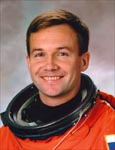

Lyndon B. Johnson Space Center
Houston, Texas 77058
|
National Aeronautics and Space Administration Lyndon B. Johnson Space Center Houston, Texas 77058 |
 |
Biographical Data |
||
YurY Valentinovich Lonchakov
(Colonel, Russian Air Force)
Test-Cosmonaut of Yu.A. Gagarin
Cosmonaut Training Center
PERSONAL DATA: Born March 4, 1965, in Balkhash, Dzhezkazkansk Region. His parents, Lonchakov Valentin Gavrilovich and Galina Vasilyevna, reside in Aktyubinsk, Kazakhstan. He is married to Lonchakova (Dolmatova) Tatyana Alexeevna. They have one son. His hobbies include books, tourism, auto-tourism, downhill skiing, sport games.
EDUCATION: In 1982 Lonchakov finished high school in Aktyubinsk and entered the Orenburg Air Force Pilot School from which he graduated with honors in 1986 as pilot-engineer. In 1995 Lonchakov entered the Zhukovski Air Force Academy from which he graduated with honors in 1998 as pilot-engineer-researcher.
EXPERIENCE: After graduation from the pilot school he served as a second crew commander, crew commander, squadron senior pilot, aviation brigade commander in the Navy. He flew Yak-52, L-39, Su-24, A-50, L-29, Tu-134 and Tu-16 aircraft.
Lonchakov has logged over 1400 hours of flight time. He is a Class 1 Air Force pilot. He is a paratroop training instructor and has made 526 jumps.
Lonchakov was selected as a test-cosmonaut candidate of the Gagarin Cosmonaut Training Center Cosmonaut Office in December of 1997. Over two space flight missions he has logged 22 days, 16 hours and 23 minutes in space.
SPACE FLIGHT EXPERIENCE: STS-100 Endeavour (April 19 to May 1, 2001) was the 9th mission to the International Space Station during which the crew successfully delivered and installed the Canadarm2 Robotic Arm supplied by the Canadian Space Agency. They also delivered more than 6,000 pounds of supplies and equipment from the Italian-built Raffaello Multi-Purpose Logistics Module. In completing his first space flight, Lonchakov traveled 4.9 million miles in 186 Earth orbits, logging 283 hours and 30 minutes in space.
Soyuz TMA-1 (October 30 to November 10, 2002) was delivered to the International Space Station by Cosmonauts Sergei Zaletin and Lonchakov along with European Space Agency astronaut Frank De Winne. They returned on the Soyuz TM-34 at the end of the Soyuz taxi flight. Lonchakov logged 10 days, 20 hours and 53 minutes in space.
In October 2008, Lonchakov will command a Soyuz spacecraft that will launch Expedition 18 to the International Space Station. NASA astronaut and Expedition 18 commander E. Michael Fincke and American spaceflight participant Richard Garriott will fly with Lonchakov. Garriott will return to Earth with the Expedition 17 crew. Lonchakov and Fincke are scheduled to return in March 2009.
JULY 2008
{kind=link}